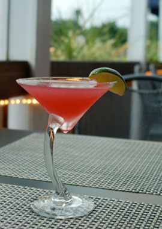

Drink Specials
- Loaded Shrimpy Maria
- House made bloody mary with El Mayor Reposado tequila, two jumbo cocktail shrimp, celery, spanish olives and lime served in a salted rimmed glass.
- 10 Cane Rum Mojito
- Fresh muddled lime and mint house made reduction syrup served on ice with the very smooth 10 Cane rum topped with club soda.
- Pom Flirtini
- Pearl pomegranate vodka chilled with pineapple and pomegranate juice strained and topped with champagne.
- Navan Rapberry Sidecar
- Navan vanilla cognac shaken with Pallini black raspberry liqueur, Cointreau and lemon sour served chilled straight up.
- Bikini Tini
- Pearl coconut vodka chilled with pineapple juice and grenadine.
- Cape Cod Ice Tea
- Smirnoff cranberry vodka, Bombay Sapphire, Ketel One Citroen, triple sec, Jose Cuervo tequila, cranberry juice and fresh lime.
- Dark and Stormy
- Goslings Bermuda Black Seal rum with ginger beer served on the rocks.
- Watermelon Margarita
- El Mayor Blanco tequila, triple sec and watermelon liqueur shaken and served in a sugar rimmed glass on ice or frozen.
- X-Rated Cosmopolitan
- X-rated passion fruit liqueur shaken with cranberry juice, lime juice and arrow triple sec.
- Tiramisu Martini
- Kahlua, Amaretto, Dark Creme de Cacoa and cream shaken and garnished with cocoa powder and espresso beans.
- Melting Pot
- Hot coffee with Kahlua, Bailey’s, Frangelico and whipped cream.
- Frozen Godiva Chocolate Mudslide
- Godiva chocolate liqueur, Kahlua, vodka and Bailey’s with chocolate syrup, whipped cream and chocolate shavings.
X-Rated Cosmopolitan